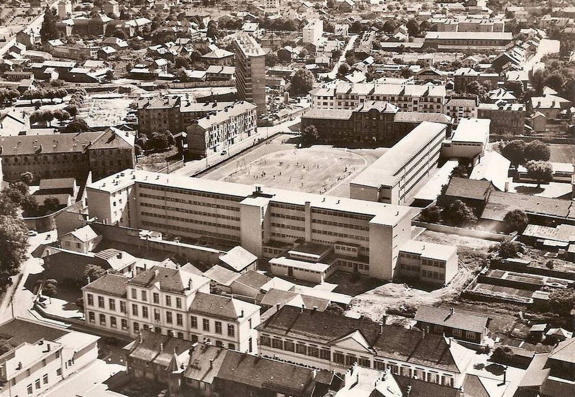
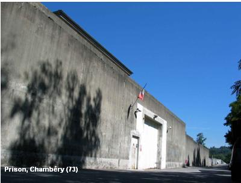
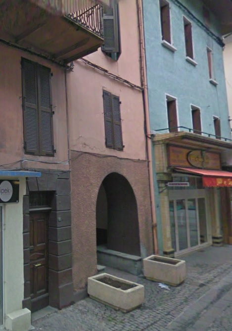

| Département | Images | Ville | Nom | Adresse | Période | Capacité | Histoire du lieu | Nombre d'exécutions |
| Savoie (73) | Albertville | Maison d'arrêt | Rue des Prisons (rue Pargoud) | 1848-1934 | Située à côté du tribunal - devenu Maison des Jeux Olympiques. Fermée en 1926, puis réouverte en 1931 avant sa fermeture définitive. | Aucune exécution | ||
| Savoie (73) |  |
Albertville | Maison centrale | Place du 11 novembre | 1862-1897 | Plans de l'architecte Eugène Denarié. Devenue pénitencier militaire le 1er octobre 1900, fermé définitivement le 26 décembre 1926, tandis qu'on envoie ses occupants à Clairvaux. Probablement réouverte par la suite, des témoignages existent pour affirmer qu'on y enfermait encore dans les années 50. Fermée à la fin des années 50. Bâtiments rasés au début des années 1990 lors de la préparation des Jeux Olympiques d'Hiver de 1992 : désormais, parc. | Aucune exécution | |
| Savoie (73) | Chambéry | Maison d'arrêt | Actuelle place Henri-Dunant | -1936 | Situées à l'arrière du marché couvert. Démolies en janvier 1937. | Aucune exécution | ||
| Savoie (73) |  |
Chambéry | Maison d'arrêt | 151, rue de Belledonne | En service depuis 1936 | 62 places (1962) 68 places (2015) |
Prison en forme de croix : la nef principale est le quartier des hommes, la nef absidiale celui des femmes. | Aucune exécution |
| Savoie (73) |  |
Moûtiers | Maison d'arrêt | 80, Grande-Rue | 1769-1934 | Ancienne maison forte des La Pérouse. Sa démolition donne lieu à une nouvelle place : la place Saint-Antoine. Seule l'entrée reste.
Site du musée de Moûtiers. Document - excellent - de recherches sur la prison locale. |
Aucune exécution | |
| Savoie (73) | Saint-Jean-de-Maurienne | Maison d'arrêt | 165 Grande Rue (Rue de la République) | Voisine du palais de justice. | Aucune exécution |
{kind=link}
{kind=link}
{kind=link}